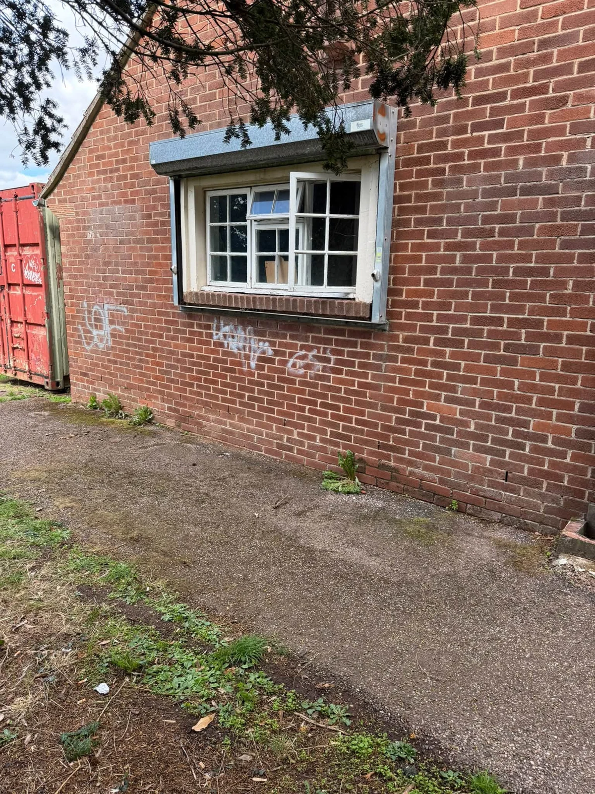
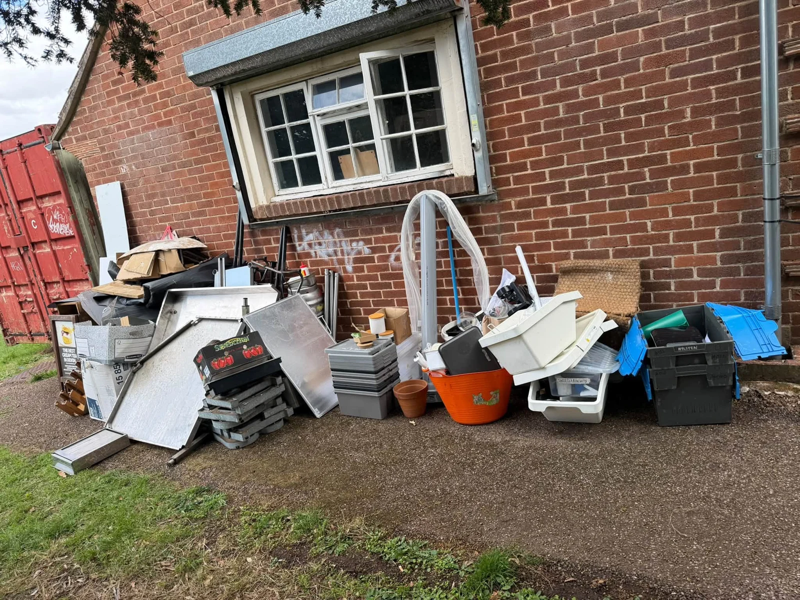
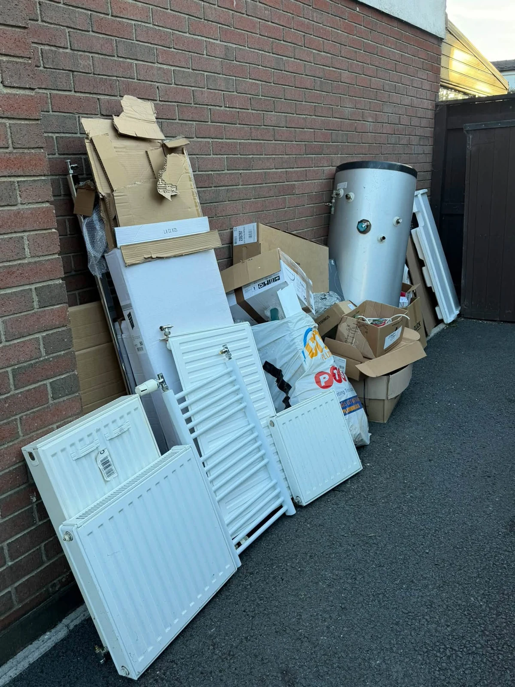
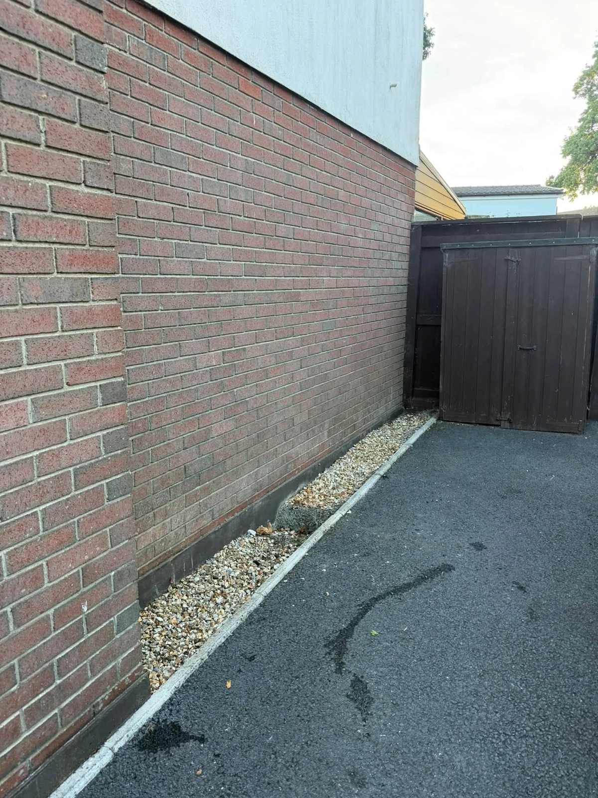
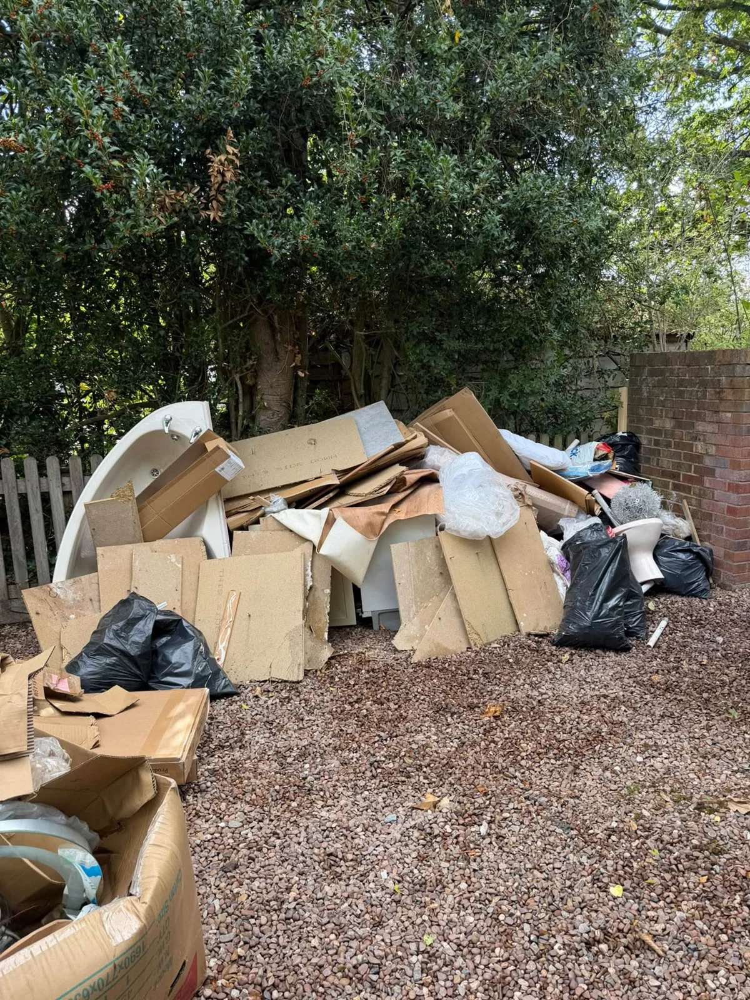
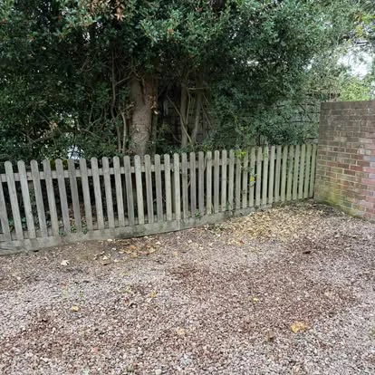
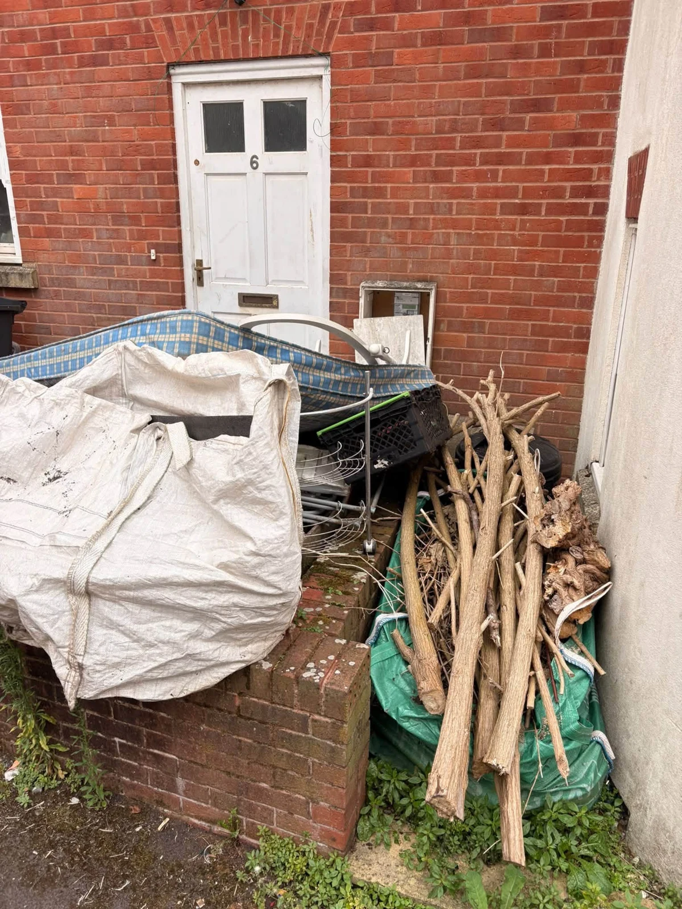
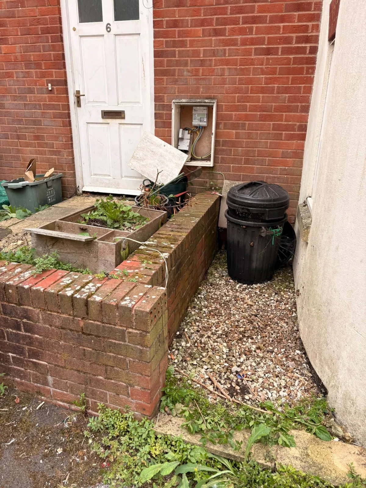
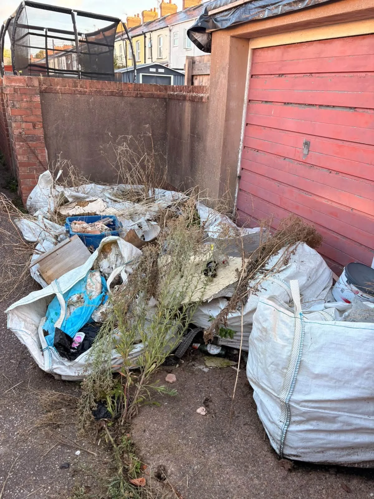
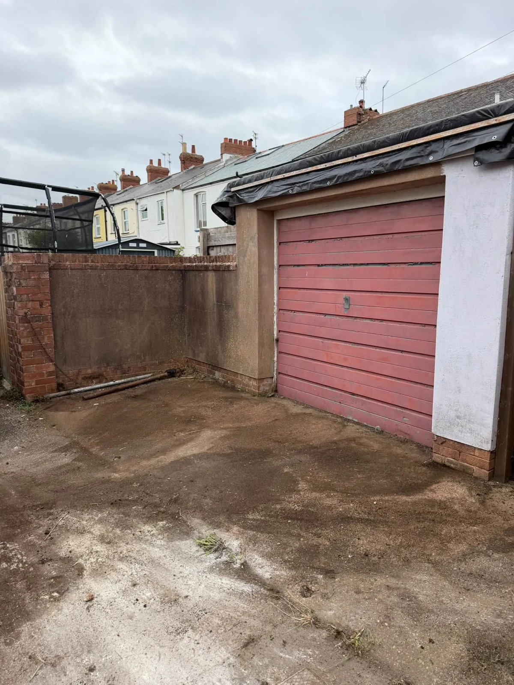

House & Property ClearancesFull properties, single rooms and end of tenancy

Garden, Garage & Shed ClearancesGet your outdoor space and storage back
Waste & Item CollectionsFurniture, appliances and builders’ waste
House MovesHouses, flats and apartments
Explore our services
LOCAL CLEARANCE. LESS HASSLE.
More room for life.
Less room for rubbish.
Clearing a house, sorting out the garage or finally tackling that pile in the garden? The Exmouth Waste Man handles the collection and heavy lifting, from a single item to a full load.
Send a few photos on WhatsApp, tell us where you are and we’ll help you get it sorted.
Get your free quote →

FROM CLUTTERED TO CLEAR
Your space.
Ready to use again.
Old furniture, appliances, renovation waste and everyday rubbish — collected without the hassle of loading the car or making repeated trips.
We also help offices, businesses, landlords and letting agents with clearances across Exmouth, Exeter and the surrounding areas.
Tell us what needs to go →

REAL JOBS. REAL DIFFERENCE.
Rubbish gone.
Space back.
Before and after clearances by The Exmouth Waste Man. From gardens and side passages to household rubbish and unwanted appliances.
Explore clearance projects →Garden clearance


Appliance clearance
Side passage clearance


Garden rubbish removal


HOUSE MOVES
Moving home?
We’ll help you move on.
House, flat and apartment moves, furniture collections and unwanted items cleared along the way. Safe, careful handling with a friendly local team.
See house moves →YOUR LOCAL WASTE MAN
Friendly service.
Properly sorted.
Based in Exmouth and covering Exeter and East Devon, we make clearances straightforward from the first message to the final collection.
01
Licensed & fully insured
A licensed waste carrier with fully insured clearance and collection services.
02
Flexible collections
Available 7 days a week, including evenings and weekends. Ask about same or next day availability.
03
Recycling wherever possible
Waste is sorted and usable items donated where possible to reduce what goes to landfill.
WHERE WE COLLECT
Exmouth and beyond.
Exmouth · Exeter · Lympstone · Budleigh Salterton · Woodbury · Topsham · Exton · Withycombe · Littleham
See where we collect →REQUEST A QUOTE
What do you need
taken away?
Tell us what needs collecting and where you are. Send your request on WhatsApp, then add photos for a quicker quote.
Also from the same owner · Coast to Coast Exterior Cleaning
Need your outdoor space cleaned too?
Driveway, patio, gutter, solar panel and commercial exterior cleaning across Exmouth and East Devon. Coast to Coast is run by the same owner as The Exmouth Waste Man.